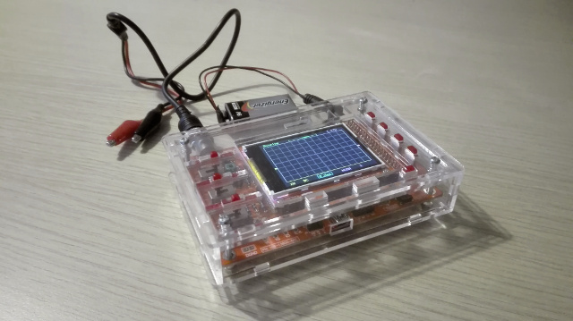
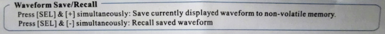
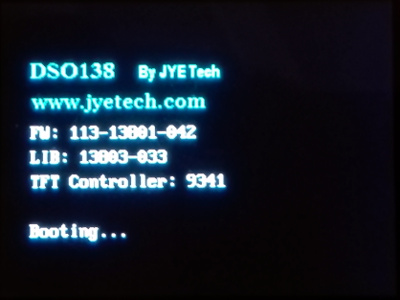
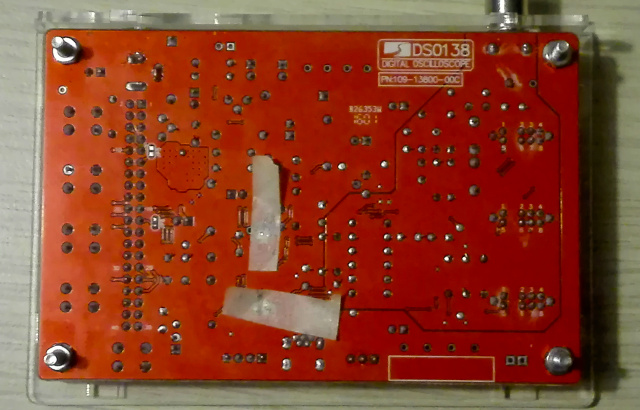
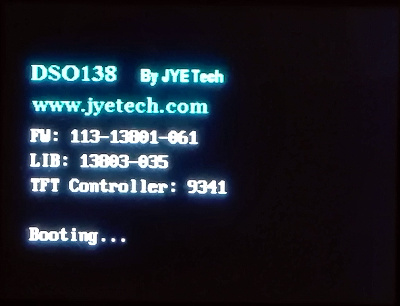
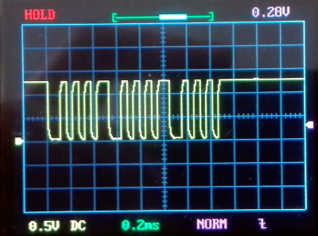
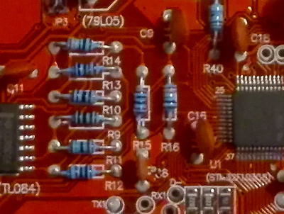
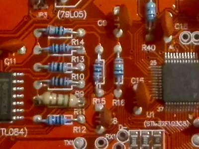
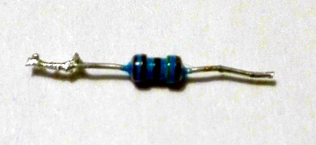
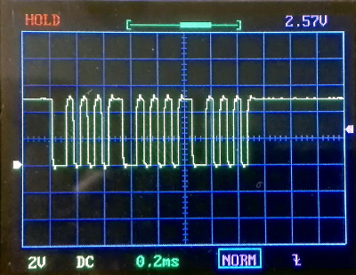

risorse | dso138 – upgrade del firmware
Attenzione: ho posto la massima cura ed attenzione nel redigere questi appunti; declino tuttavia ogni responsabilità per eventuali imprecisioni, errori od omissioni, così come declino ogni responsabilità per eventuali danni a cose, proprietà o persone derivanti dall’uso di questi contenuti.
Ho da poco acquistato la versione pre-assemblata dell'oscilloscopio DSO 138 per portare a termine un piccolo progetto personale:
L'oscilloscopio nel suo guscio in plexiglas, acquistato a parte
Il rapporto qualità/prezzo dello strumento è davvero notevole, tuttavia ho riscontrato un piccolo problema: il salvataggio della forma d'onda non funziona, sebbene il manuale riporti le istruzioni per farlo.
Estratto del manuale con le istruzioni per catturare una forma d'onda
Consultando la pagina ufficiale relativa al firmware del kit in oggetto, scopro che il salvataggio della forma d'onda è stato introdotto nella versione 113-13801-050, rilasciata il 20 novembre 2015. Purtroppo, il kit che ho acquistato ne monta uno precedente, come indicato dalla schermata d'avvio del software:
La schermata iniziale che riporta la versione del firmware in uso
Considerato il costo ridotto dello strumento, ho deciso di provare ad aggiornare il firmware.
La procedura di aggiornamento del firmware per questo kit non è proprio banale, richiedendo in particolare la disponibilità di un adattatore seriale TTL 3.3V/USB che il caso vuole abbia da poco acquistato (un FT232RL della AZDelivery, cfr. Test del chip FT232RL con Arduino). Complessivamente, per poter aggiornare il firmware dell'oscilloscopio, occorre:
Scaricare ed installare il programma di trasferimento del firmware; scaricare, scompattare e tenere a portata di mano il file del firmare (nell'archivio .zip che si scarica dal sito del produttore ciò che serve è il file con estensione .hex).
Per attivare il bootloader e rimuovere la protezione in scrittura della zona di memoria che contiene il firmware è necessario cortocircuitare i jumper JP1 e JP2. Le istruzioni consigliano di chiudere il circuito con dello stagno; essendo il mio stagnatore piuttosto vecchiotto, ho optato per una soluzione più spartana: ho sfregato leggermente i contatti dei due ponticelli con la punta di un cacciavite da orologiaio per rimuovere l'eventuale isolante presente, ho quindi ricavato due piccoli rettangoli di carta stagnola di circa 2×4mm l'uno che ho fissato sopra i contatti con dello scotch di carta.
I jumper JP1 e JP2 cortocircuitati
Fortunatamente già disponevo di un adattatore seriale/USB che supporta segnali a 3.3V; il PC era inoltre già equipaggiato con i relativi driver e il corretto funzionamento del dispositivo era già stato verificato. Il collegamento PC/oscilloscopio è stato stabilito con la seguente procedura:
| FT232RL | DSO138 | Colore cavo |
|---|---|---|
| GND | GND | nero |
| TX | RX | bianco |
| RX | TX | marrone |
Il collegamento seriale oscilloscopio/adattatore
Avviato il programma per il trasferimento del firmware consigliato, ho configurato la porta seriale come richiesto dalle istruzioni (115200 baud, 8 bit di dati, parità pari, echo disabilitato). Ho acceso l'oscilloscopio e ho confermato il trasferimento del nuovo firmware, non prima di aver richiesto l'azzeramento delle sole pagine di memoria necessarie, l'ottimizzazione e la verifica del download.
Al termine della procedura, che dura qualche secondo, ho chiuso il programma, scollegato l'oscilloscopio dall'adattatore seriale/USB. Ho quindi spento l'oscilloscopio e rimosso i ponticelli di carta stagnola. Ho infine riavviato l'oscilloscopio, verificando che nella schermata iniziale apparisse il numero di versione del nuovo firmware:
Il nuovo firmware è operativo!
Ho infine potuto verificare, con un segnale campione generato con Arduino, che il salvataggio della forma d'onda funzionasse come specificato sul manuale.
Dopo qualche istante di euforia, mi sono accorto che qualcosa non andava sulla scala delle tensioni: un tipico segnale TTL a 5V veniva rappresentato come fosse di poco superiore a 1V (1.28V circa):
Rappresentazione di un segnale TTL: notare la scala delle tensioni
Escluso il danneggiamento della scheda e l'esaurimento della batteria di alimentazione, ho effettuato qualche ricerca in rete, ed ho scoperto che è un problema piuttosto comune, e dipende dal fatto che i firmware precedenti alla versione 113-13801-050 richiedono un valore della resistenza R11 di 1.5KΩ, mentre i firmware più recenti, per lo stesso resistore, ne richiedono 150Ω.
Se R11 ha un valore 1.5KΩ è possibile che il kit in dotazione sia particolarmente vecchio (modello 13801K/02K), o più probabilmente che si tratti di un clone non ufficiale. Il produttore ha predisposto un documento che indica come stabilire se il kit acquistato è originale o un clone non autorizzato. Purtroppo quello in mio possesso, pur acquistato su Amazon, si è rivelato essere un clone.
Le note in calce alla pagina ufficiale del kit, così come diverse discussioni sui forum del produttore (per esempio Error in voltage reading, o R11 R38 - incorrect Amplitude on Test Signal) propongono come soluzione al problema la sostituzione della resistenza R11 con una da 150Ω. Così ho fatto, anche se con un po' di timore a causa della poca confidenza che ho con lo stagnatore:
La resistenza R11 originale
La nuova resistenza da 150Ω, leggermente più grande perché da 1/4W
A dispetto delle bande colorate (marrone-verde-nero?), al tester la resistenza R11 originale risulta effettivamente essere da 1.5KΩ:
Dettaglio della resistenza R11 originale
La sostituzione ha sortito l'effetto sperato: l'oscilloscopio ha ricominciato a indicare le tensioni corrette, come si può notare dall'immagine seguente, in cui è rappresentato il solito segnale TTL a 5V:
La scala delle tensioni con le proporzioni ripristinate
L'oscilloscopio è ora di nuovo funzionante!
Pagina modificata il 02/01/2018